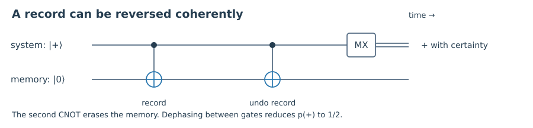

Starting point: Chapters 1–9; familiarity with density operators and linear algebra.
Anchor example: A reversible friend interaction and a four-agent inference puzzle.
Method: Calculate a concrete experiment, identify the assumptions, then compare what different accounts explain.
Watch for: A contradiction between an assumption package is not a proof that quantum mechanics is unusable or that one interpretation wins.
This lesson includes explanations, worked examples, and problems with solutions. Advanced results whose proofs are outside the chapter are identified explicitly.
Can we consistently reason about observers who are themselves measured quantum mechanically?
10.1 Wigner’s friend as an experiment
10.1.1 Specify which laboratory observable is measured
Model the friend by a memory with a reversible interaction \(|0,F_r\rangle\mapsto|0,F_0\rangle\), \(|1,F_r\rangle\mapsto|1,F_1\rangle\). After a |+⟩ input, an outside observer assigns \(|\Phi_L^+\rangle=(|0,F_0\rangle+|1,F_1\rangle)/\sqrt2\) to the isolated laboratory. Calling the memory a friend changes the conceptual question, not the linear algebra.
Wigner can in principle measure the projector \(P_+=|\Phi_L^+\rangle\langle\Phi_L^+|\). The coherent state predicts p(+)=1. A mixture of the two record branches predicts p(+)=1/2. An equivalent test reverses the friend interaction and measures X on the qubit. The record is then erased; this is not a simultaneous nondisturbing reading of the original record and its incompatible interference observable.
For a macroscopic laboratory the required control is demanding because all environmental records must be included or undone. The thought experiment assumes this control. An ordinary observer outside an uncontrolled room cannot simply access that interference by deciding to use a different interpretation.
Thus the central issue is the scope of state assignments and collapse claims. A conditional branch state can predict ordinary record comparisons correctly yet fail as a replacement for the full state in a later global interference experiment.

The ideal friend model uses a reversible memory. MX denotes X-basis readout; double lines carry a classical result. The second gate erases the original memory. Complete dephasing between the gates changes p(+) from one to one half.
Worked check 10.1. For a coherent laboratory with real residual overlap γ, find the P₊ probability.
Reasoned solution
The effective two-branch state has equal diagonals and off-diagonals γ/2, so p(+)=(1+γ)/2. Complete coherence gives one; full dephasing gives one half.
10.2 Cross-agent inference
10.2.1 Separate a joint amplitude from a chain of certainty claims
A useful two-laboratory state for studying the Frauchiger–Renner argument is
The first label includes a coin and its friend's record, the second a spin and its friend's record. Define \(|\overline{\mathrm{ok}}\rangle=(|h\rangle-|t\rangle)/\sqrt2\) and \(|\mathrm{ok}\rangle=(|d\rangle-|u\rangle)/\sqrt2\). The joint amplitude for the two outside “ok” outcomes is (1−1+1)/√12=1/√12, giving probability 1/12.
There is also a tempting inference chain. Conditioning on t leaves (d+u)/√2, which predicts the second outside outcome “fail” with certainty. Conditioning on u implies t. Projecting the first laboratory onto overline-ok leaves a vector proportional to u, suggesting that this observer can adopt the second friend's certainty, and then the first friend's certainty, to infer “fail.” Yet the joint Born calculation allows both outside “ok” outcomes.
The mistake is not in the three-term amplitude. The tension concerns transferring certainty statements across agents, conditioning contexts, and incompatible later measurements. The published no-go argument formalizes a package involving quantum predictions, consistency of agents' certainty inferences, and single outcomes. Analyses disagree about which step an interpretation should reject. We derive the finite-state calculation here; a complete logical theorem and its variants require the source's precise rules.
Worked check 10.2. Find p(overline-ok) and p(ok|overline-ok) for the three-term state.
Reasoned solution
Projection cancels the d terms and leaves −|u⟩/√6, so p(overline-ok)=1/6. In |u⟩ the final ok probability is 1/2. Their product is 1/12.
10.3 A comparative research practicum
10.3.1 Evaluate accounts with the same mathematical benchmark
We can now compare approaches without asking a popularity question. Use one laboratory interaction, one initial state, and two possible later measurements: a record comparison and a coherent interference test. Then ask each account what is actual, what evolves, what the state describes, and when a conditional state is legitimate.
Questions to carry into the final comparison; these are broad families, not exhaustive definitions.
Approach
Central commitment
Explanatory task to examine
Operational accounts
Probabilities for specified procedures
Scope and physical status of the measurement description
Consistent histories
Probabilities inside consistent frameworks
Framework selection and incompatible propositions
Everett
Universal unitary state, relative records
Branch structure and probability justification
Bohmian mechanics
Wavefunction plus actual configuration
Equilibrium, nonlocality, and effective collapse
Objective collapse
Additional stochastic localization law
Ontology, parameter constraints, and deviations
Relational mechanics
Events relative to physical systems
Relations between records and facts
QBism
Agent probabilities for consequences of actions
Shared science and normative quantum constraints
For the final project, choose two approaches and write a short technical comparison. Derive the probabilities of both later measurements, label every use of conditioning, and identify which assumption in the measurement-problem package each approach changes. If the approaches are empirically equivalent for this experiment, say so. Do not invent a distinguishing experiment by silently assigning one of them the wrong state.
Include one reproducible calculation, a primary-source passage discussed in your own words, a serious objection and response for each account, and a statement of what remains unresolved. A strong conclusion can be conditional: “Under these assumptions the predictions agree, while the explanatory commitments differ.” That is a substantive result. The numerical companion checks the finite examples in this course; it does not certify an interpretation.
Worked check 10.3. What would make a claimed experimental distinction invalid?
Reasoned solution
Giving one empirically equivalent account a collapsed mixture where its own rules retain a coherent full state. Predictions must be derived from each account’s actual commitments and the same physical protocol.
Global interference measurements and ordinary record comparisons are different protocols.
Cross-agent certainty requires an explicit rule about conditioning and measurement context.
A fair comparison uses the same experiment and each approach’s own dynamics and state assignments.
Questions and worked problems
These exercises draw on the whole chapter. Attempt each question before opening a hint, explain your reasoning, then compare it with the worked solution.
Why is Wigner’s interference test not a routine reading of a notebook?
Hint 1
Identify the measurement basis.
Worked solution
It projects onto superpositions of whole record states and requires coherent control of all relevant record degrees of freedom. Reading the notebook measures the record basis.
What happens to the friend’s record under exact reversal?
Hint 1
Apply the inverse of the record unitary.
Worked solution
Both correlated branches return the memory to the ready state. The interference test erases the original record rather than preserving it as a simultaneously readable classical fact.
It is zero because ok=(d−u)/√2 is orthogonal to that conditional vector. Transferring this certainty to incompatible observer contexts requires additional justification.
Why can’t the no-go title be read as a universal proof of inconsistency?
Hint 1
Identify the extra reasoning assumptions.
Worked solution
The contradiction concerns a specified package of quantum predictions, cross-agent certainty rules, and single-outcome commitments. Different approaches can reject or restrict different premises.
Give a fair criterion for empirical equivalence in the final project.
Hint 1
Hold the preparation and available interventions fixed.
Worked solution
The two accounts must assign identical probabilities to every outcome of the specified operational protocols, using their own correctly applied state and dynamics rules.
Name one possible empirical difference for a collapse proposal.
Hint 1
Compare retained coherence under otherwise controlled evolution.
Worked solution
A specified collapse law can predict additional interference suppression or diffusion beyond the environmental model. The predicted size must be calculated from its parameters.
Write an assumption audit for the coherent friend test.
Hint 1
List preparation, dynamics, and measurement access.
Worked solution
Assume a pure |+⟩ input, a reversible record interaction, coherent isolation or access to all records, the chosen global projector, and the interpretation’s state-update rules. Removing coherent access changes the experiment and the inference.